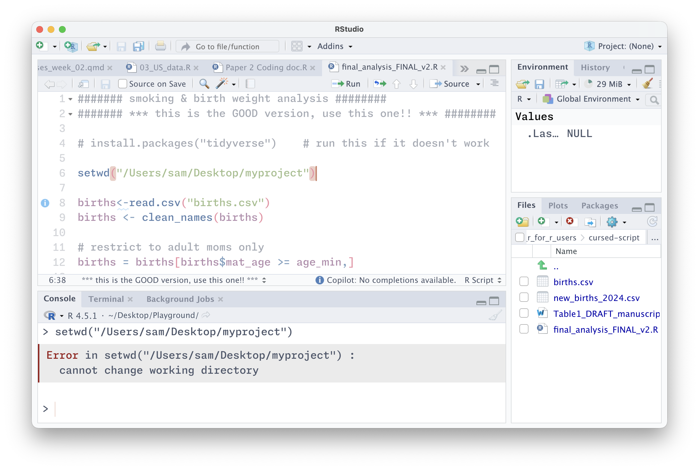
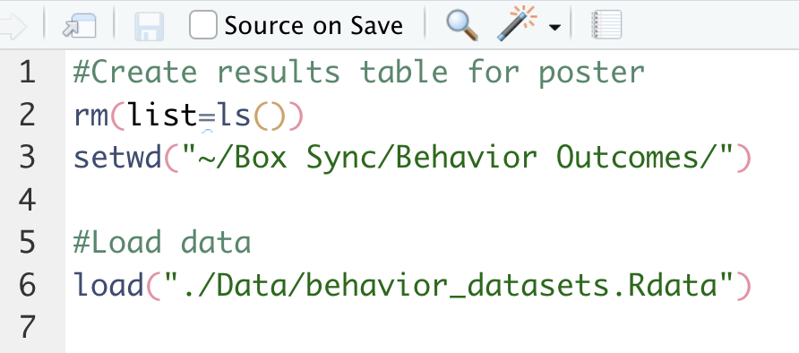
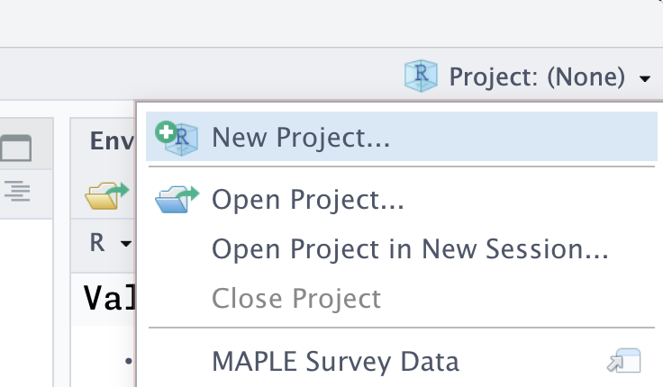
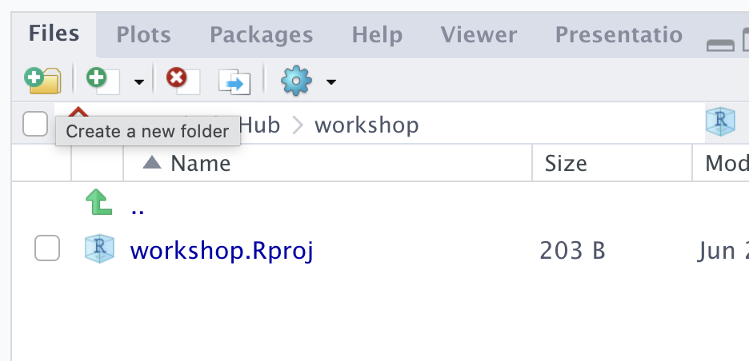
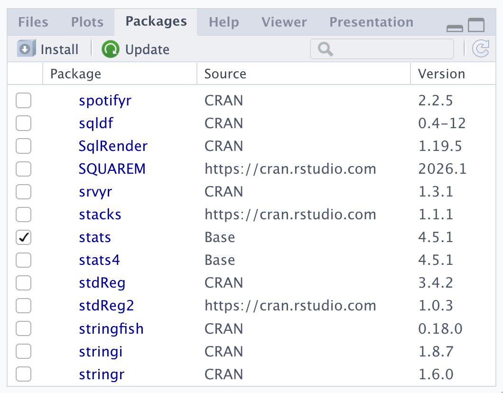
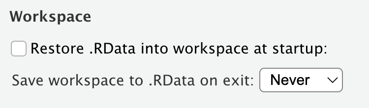
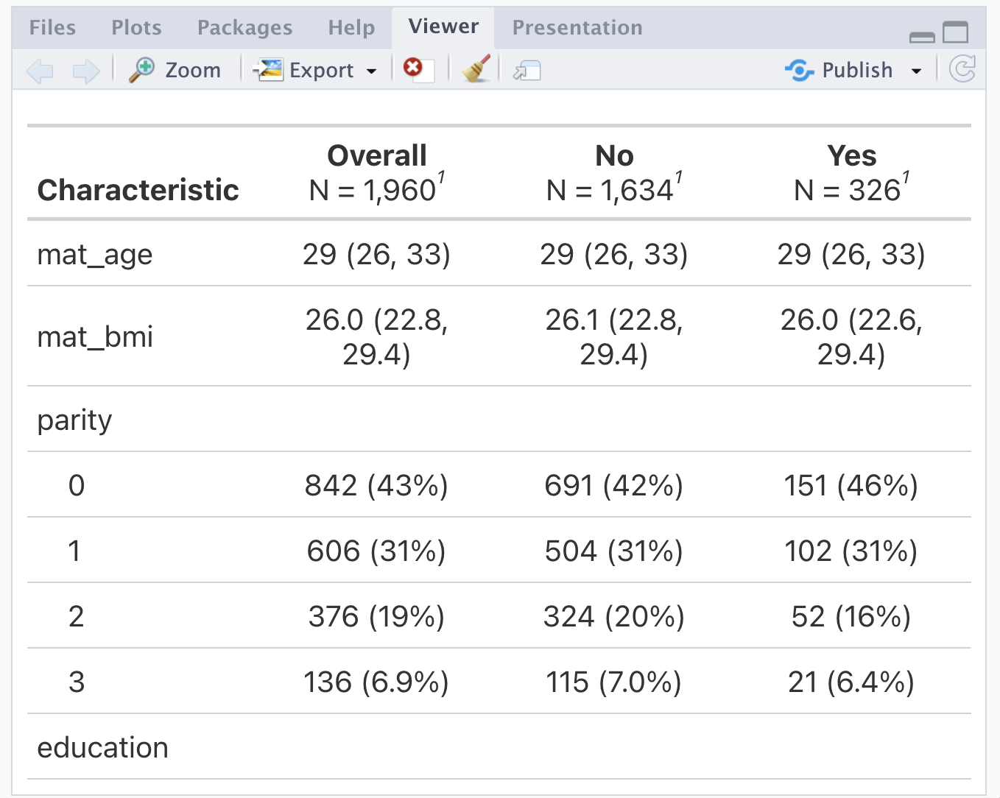
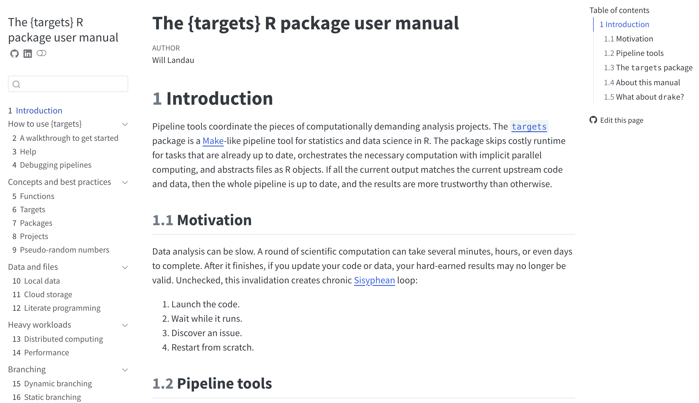

[1] 3R for R Users
Part 1: R Workflows
Louisa Smith
The scenario
You inherited a script
Sam, a graduate student on your research team, just graduated and left for a new job, leaving an ongoing project to pass to you. Their analysis is “done.” You get an email:
“Here’s the script –
final_analysis_FINAL_v2.R. It definitely works, just run it! The data’s attached, plus the Table 1 doc I’ve been updating. Good luck! – Sam”
Attached: final_analysis_FINAL_v2.R, births.csv, new_births_2024.csv, and Table1_DRAFT_manuscript.docx.
You open it and start running

Most of us have written a script like this
Today we’ll cover good R practices to avoid leaving any of your colleagues – and possibly most importantly, your future self – in this position
What Part 1 covers
- Projects + paths –
here() - Blank-slate R – why “it works on my machine” happens
- Reproducibility – code that runs in order, every time
- Code style – readable code, and formatters that do it for you
- Quarto – analysis and write-up in one reproducible document
- Organizing & scaling – scripts → Quarto →
targets - Documenting – a README so you remember what you did…
Two editors, same ideas
We’ll work in RStudio today – it’s probably what you already use and it’s great
But keep an eye on Positron: Posit’s newer editor, built on VS Code. Multi-language (R and Python), more extensible, and where a lot of this is heading.
I’ll mention a few Positron asides in case you ever want to make the switch
Projects
The first line already broke
Error in setwd(“/Users/sam/Desktop/myproject”) :
cannot change working directory
Do you think this code from 2015 still runs?

The problem with setwd()
setwd() points at one exact folder on one exact computer. The moment the project moves – a new laptop, a shared drive, your machine – it’s dead.
Note
A classic explainer: https://www.tidyverse.org/blog/2017/12/workflow-vs-script/
Better: an R Project
my-project/
├─ my-project.Rproj
├─ README.md
├─ data/
│ ├─ raw/
│ └─ processed/
├─ R/
└─ results/
├─ figures/
└─ tables/- The
.Rprojfile marks the project root and opens RStudio in that folder – nosetwd()needed- It stores some settings but you never need to edit it by hand
- Positron doesn’t use
.Rprojfiles, instead opening the folder as a project – but the idea is the same
- If you share the project folder (e.g. GitHub, Dropbox, zipping and emailing), it will set the working directory wherever it’s saved


Activity
- Start a new R project (File → New Project → New Directory → New Project., or use the upper-right-corner drop-down)
- Add a
datafolder (either through RStudio or your file explorer) - Move the workshop files into the appropriate places in the project folder
File paths
The good news is that this runs now!
The bad news is that, depending on your settings, if you run it from within an RMarkdown/Quarto document, it might break
Error in file(file, “rt”) : cannot open the connection
In addition: Warning message:
In file(file, “rt”) :
cannot open file ‘data/births.csv’: No such file or directory
Paths that travel: the here package
here() builds paths from the project root – the folder with the .Rproj.
- On my machine
here("data/births.csv")becomes my full path (i.e.,/Users/l.smith/.../myproject/data/births.csv); on yours it becomes yours - This conversion into a full path rather than relative path means that it will work even in a Quarto document compiling in a subdirectory
How to use here()
You can nest as many directories as exist in the path, and slashes are always forward:
here::here() vs library(here)
is the same as
Activity
Start rewriting the script
- Delete the
setwd()line, and rewrite theread.csv()line to usehere()- You might need to
install.packages("here")first
- You might need to
- Make sure you can read in the data!
Blank-slate R
Your R session is full of invisible state
While you work, R quietly accumulates:
- objects you’ve created
- packages you’ve loaded
- a working directory
A script doesn’t make this explicit will run for you, today, and break for anyone else – including future you
Hidden state: a worked example
Sam’s script restricts to adult mothers:
####### smoking & birth weight analysis ########
####### *** this is the GOOD version, use this one!! *** ########
# install.packages("tidyverse") # run this if it doesn't work
setwd("/Users/sam/Desktop/myproject")
births<-read.csv("births.csv")
births <- clean_names(births)
# restrict to adult moms only
births = births[births$mat_age >= age_min,]Error: object ‘age_min’ not found
Error: object not found
Where does age_min come from? It’s never defined in the script. Sam typed age_min <- 18 in the console months ago, and it’s been sitting in their environment ever since.
This is hidden state – the analysis depends on something that isn’t in the code.
This is also common when you are not running code top-to-bottom – this will error in a new session even if age_min is defined down below.
And it’s not just objects
The same trap catches functions:
Error in clean_names(births) : could not find function “clean_names”
If a package was loaded in Sam’s session but library() never made it into the script, or a helper function only ever lived in the console, your clean session has no idea what you mean.
Packages
base, methods, datasets, utils, grDevices, graphics, stats are all loaded by default

Referring to functions from packages
Works because janitor is loaded:
Works without loading all janitor functions
But another janitor function, like get_dupes(births) will error
Quick tip
Error: object ‘Age_Min’ not found
Error in clean.names(births) : could not find function “clean.names”
You are also going to get these same errors if you spell something wrong, so check for typos before going on a wild goose chase for hidden state!
attach()
Sam’s script does this:
attach() dumps a copy of every column into your search path so you can type birth_weight instead of births$birth_weight. Tempting. Don’t.
Why attach() goes wrong
The attached copy is a snapshot. Edit births and the attached birth_weight is now stale – you’re working with two versions and won’t be told which.
- attach two datasets with a shared column name and one silently masks the other
- forget to
detach()and the clutter follows you all session
Refer to columns explicitly (births$x, or with(), or stay inside dplyr).
Start every session empty
Tell R to never save or restore your workspace:
- Tools → Global Options → General
- Uncheck “Restore .RData into workspace at startup”
- Set “Save workspace to .RData on exit” → Never

In Positron, this is automatic!
rm(list = ls()) is not a clean slate
You’ll see scripts open with this to “clear everything”:
It deletes objects – but it does not unload packages, reset options, or change the working directory. It’s a false sense of safety.
Tip
The real reset: Session → Restart R (Cmd/Ctrl + Shift + F10). Do it often. A fresh process is the only true blank slate.
Activity
Hunt the hidden state
Sam’s environment was full of things the script quietly depends on. Find as many as you can:
- objects used but never defined in the script
- functions called but never defined
- packages used but never loaded with
library()
Just make a list for now – we’ll fix them next.
Reproducibility
Code runs in the order it’s written
…not the order you happened to run things in. Sam’s script draws a figure near the top:
Same story with packages
The library() call exists – it’s just in the wrong place. In Sam’s session the package was already loaded, so the figure ran. In a fresh session it errors: could not find function "ggplot".
Load every package at the top.
The fix is just… order
A script should read top to bottom like a recipe: load → read → clean → model → report. Nothing is used before it exists.
Reproducible = re-runnable from scratch
A reproducible analysis can be re-run from nothing and give the same result – by you, by a reviewer, by you in two years.
That needs:
- self-contained paths (
here()), - a clean session (no hidden state),
- code in runnable order
Two more reproducibility levers
These won’t show up today, but you’ll hit both in real work – so know they exist.
- Randomness – anything random gives different answers each run unless you pin it down.
- Package versions – “it worked last year” can fail after an update.
Randomness needs a seed
Bootstraps, multiple imputation, train/test splits, simulations, sample() – re-run them and you get different numbers every time.
set.seed() once, near the top, makes the randomness repeatable. Pick an random integer – the point is that it’s written down, so your confidence interval is the same tomorrow.
Your packages are part of the environment
Blank-slate R handles your objects and which packages are loaded. But it doesn’t pin which versions.
renv: a lockfile for your project
renv gives each project its own library and records exact versions in a renv.lock file that travels with the project.
We’re not going to practice this, but there is helpful documentation: https://rstudio.github.io/renv/articles/renv.html
Activity
Make it run, start to finish
- Move
library()calls to the top; move the figure after the data it plots. - Fix the hidden state you found previously (define the objects, load the packages, replace Sam’s helper).
- set
min_ageto 18,bad_idsto 1:3,bw_cutoffto 2500, and replacemake_or_table()withtidy()
- set
- Restart R (
Cmd/Ctrl + Shift + F10) for a clean slate. - Source the whole script. Read the first error, fix it, repeat until you get rid of as many errors as possible (there will still be 1 you can’t fix – see if you can figure out why!)
Code style
Style is for humans
The code runs either way. Style is what makes it readable, reviewable, and hard to break – by collaborators, reviewers, and future you.
This is separate from code that’s wrong or unsafe. We’re talking about formatting and naming here, not correctness.
Ugly, unreadable code
What does this do? Who knows. One line, three statements, cryptic names, no spaces, mixed assignment.
Instead you might write
More bad habits
Habits worth keeping
- One statement per line; let long calls breathe across lines
- Spaces around operators:
x + 1, notx+1 <-for assignment (the tidyverse convention), reserve=for arguments- Consistently cased names that mean something
- Indent nested code; delete dead commented-out code (save in separate file?)
- Keep lines short enough to read without scrolling
Note
Reference: https://r4ds.hadley.nz/workflow-style
Don’t do it by hand – use a formatter
styler (R package)
- RStudio → Addins → Style active file
- or
styler::style_file("R/01_clean.R") - https://styler.r-lib.org
Air (newer, very fast)
- Format-on-save in your editor
- Built into Positron; RStudio & VS Code via extension
- https://posit-dev.github.io/air/
Pick one and be consistent. The point isn’t which – it’s that the machine keeps the formatting tidy so code review is about ideas, not whitespace.
Activity
Clean it up
- Install and run
styler::style_file()on your script (Addins → Style active file), or install Air and format document. - Look at the diff – what did the formatter change for you?
- Now fix what a formatter won’t: cryptic names,
=→<-inconsistency, magic numbers, anything else that’s not aesthetically pleasing to you!
Reproducible reporting
Plot twist 🔌
“Restrict to mothers aged 20 and older, not 18.”
Change age_min <- 20 in one place, re-run, and every number updates.
…except the ones Sam hand-typed into Table1_DRAFT_manuscript.docx. Those are now wrong, and nothing tells you
Sam’s “report” was copy-paste
Sam’s script is full of this:
Numbers got print()ed (NB: you do not need to write print() in this situation!), then hand-typed into a Word doc. Re-run the analysis (or change the inclusion criteria…) and every number in that doc is now a lie waiting to be caught in proofs.
First, let R build the table
Instead of typing Table 1 by hand, generate it with gtsummary or a similar package:
One function, a real Table 1, recomputed from the data every time. Change the data and the table changes with it.

Quarto: code and write-up in one file
A Quarto document (.qmd) weaves prose, code, and output together, then renders to HTML, Word, or PDF.
Markdown for text; code chunks for analysis:
Why not R Markdown?
Only because quarto is newer and more featured!
- Anything you already know how to do in R Markdown you can do in quarto, and more!
- All of these slides are made in quarto.
- If you know and love R Markdown, by all means keep using it!
Quarto workflow
- Create a Quarto document
- Write code
- Write text
- Repeat 2-3 in whatever order you want
- Render repeatedly as you go
How does it work?
- You text in markdown and code in R
knitrprocesses the code chunks, executes the R code, and inserts the code outputs (e.g., plots, tables) back into the markdown documentpandoctransforms the markdown document into various output formats

Text and code…
… becomes …
My title
Some text
Some italic text
Some bold text
- Eggs
- Milk
If you prefer, you can use the visual editor

R chunks
Everything within the chunks has to be valid R1
Chunks run in order, continuously, like a single script
YAML
At the top of your Quarto document, a header written in yaml describes options for the document
There are a ton of possible options, but importantly, this determines the document output
Output

Numbers that never go stale
Report results with inline code instead of typing them:
There were 1960 participants in the study.
That `r ` chunk runs when the document renders and drops the number straight into the sentence. Change the data, re-render, and the prose updates itself – no more hand-typed numbers.
You can pull numbers directly from tables
The median maternal age was 29 (26, 33).
Note
inline_text() is a helper that pulls a specific value from the table. A tutorial is available here: https://www.danieldsjoberg.com/gtsummary/articles/inline_text.html
Rendering = the blank-slate test, for free
When you click Render, Quarto runs the whole document in a fresh R session, top to bottom.
Tip
If your .qmd renders, it’s reproducible by construction – hidden state and out-of-order code can’t survive a render. That alone is a great reason to move analyses into Quarto.
Activity 5
Turn the analysis into a report
- File → New File → Quarto Document.
- Move your cleaning + model code into code chunks.
- You can omit the sensitivity analysis section for now
- Replace Sam’s hand-typed Table 1 with
tbl_summary(). - Write one sentence of results using inline R code (about whatever you want).
- Click Render, then change
age_minand re-render. Watch every number – table and text – update itself.
Organizing & scaling
One script that does everything
Sam’s script reads, cleans, plots, models, and saves – all in one file, top to bottom. For a small analysis, honestly, that’s fine!
The strain shows up as it grows:
- you scroll forever to find the modeling code
- re-running the figure means re-running the slow cleaning too
- two people can’t edit it without colliding
There’s no single right answer. Here are four options, lightest to heaviest – pick what works for you
1. Numbered scripts + a runner
R/00_setup.R # packages, options, source functions
R/01_clean.R # raw data -> analysis data
R/02_analysis.R # fit models
R/03_outputs.R # tables, figures
run_all.R # source() them in orderTransparent, no new tools. A great default for most projects.
2. One Quarto document
Everything – cleaning, models, write-up – in a single .qmd.
Best when the analysis is the deliverable: a report, a paper, a homework assignment. One file renders to the finished document.
3. A Quarto report, assembled from sections
A parent document pulls in section files that share one R session.
Good when a document gets unwieldy, or co-authors each own a section without scrolling through the whole manuscript.
Note
This is basically how I wrote my dissertation (with RMarkdown)!
4. A targets pipeline
targets tracks what each step depends on and only re-runs what changed.
Why targets?
Edit the figure and re-run – a slow model does not need to be refit. Change the raw data file and everything downstream knows it’s out of date.
It’s overkill for today’s tiny analysis, but worth it when steps are slow, numerous, or re-run constantly (I use it for simulation studies and for more complex analyses where the data is often changing)
targets
I gave a talk introducing targets a few years ago: https://www.louisahsmith.com/talks/2023-05-31/slides#/title-slide
The documentation is very thorough: https://books.ropensci.org/targets/

Activity 6
Split it up
Carve your working script into numbered pieces and save them into the appropriate directory:
R/00_setup.R–library()calls, read + clean the dataR/01_model.R– fit the modelsR/02_figures-tables.R– analyze the resultsrun_all.R–source()them in order- make sure you are referring to the file paths where they are saved!
Restart R and source run_all.R. Does it run clean?
Documenting your project
The one thing Sam didn’t leave you
You’ve spent this whole session reverse-engineering a script with no instructions: guessing what age_min was, where the data came from, how to run the thing.
A README would have answered most of that in 30 seconds.
It’s a plain text or markdown file (README.md) at the project root. Be the colleague you wish Sam had been.
What goes in a README
It doesn’t have to be long – even ten lines beats nothing:
- What the project is and what question it answers
- Data – where it came from, and “raw is read-only”
- How to run it – open the
.Rproj, restart R, sourcerun_all.R - Project structure – the folder map
- Key decisions – including those magic numbers (
age_min, the LBW cutoff) - Requirements – packages needed (this is where
renvpays off)
Tip
Write it for the person who inherits this in two years. That person is usually you.
Activity 7
Write the README
Create a README.md at your project root. Cover:
- what the analysis does
- where the data come from
- how to run it (open
.Rproj→ restart R → sourcerun_all.R) - the key analysis choices –
age_min, the low-birth-weight cutoff
Wrap-up
Before and after
Before: one file, hard-coded paths, hidden state, code out of order, results typed into Word by hand. Broke on the first line.
After: an R Project anyone can open and run from a clean session – paths that travel, code in order, tables and numbers that rebuild themselves, and a choice of ways to organize and report it.
The habits worth keeping
- One R Project per analysis; paths via
here() - Start every session blank; restart often
- Code that runs top to bottom in a fresh session
- Let a formatter keep the style tidy
- Quarto so your numbers never go stale; pick the organization that fits
- A README so the next person (probably you) isn’t reverse-engineering it
On to Part 2
Your project runs and reports itself.
But code still breaks. Part 2: how to debug it systematically, and how to ask for help that actually gets you unstuck.